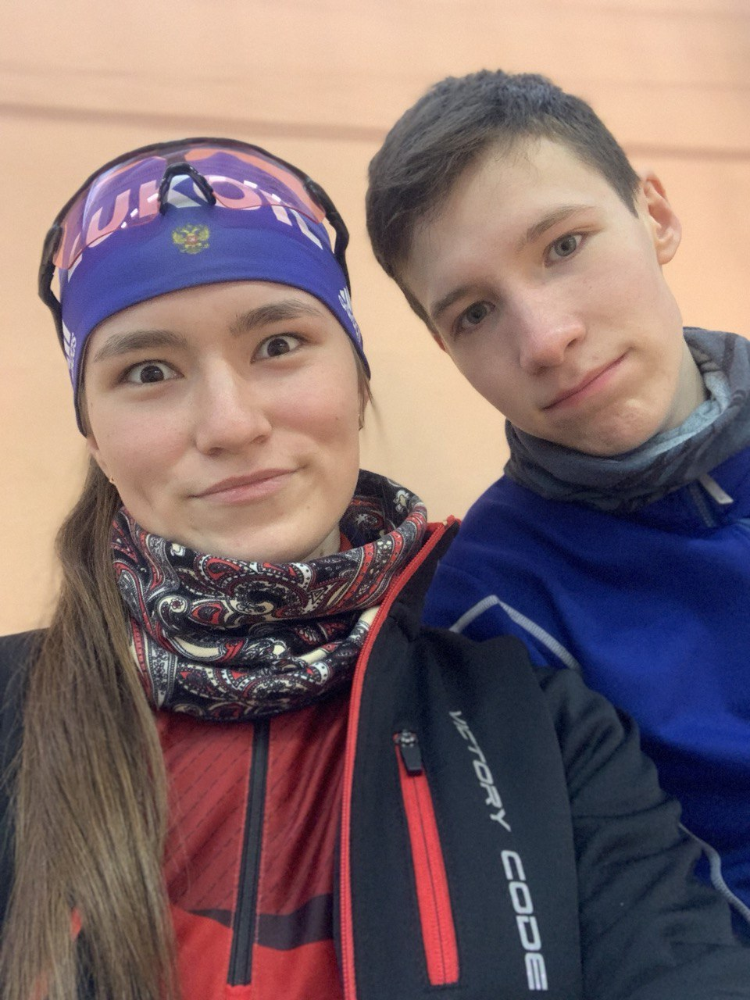

Я тебя очень сильно люблю!
Я понял, что я безумно люблю тебя. Каждый день думать о тебе тяжело. Я понял, что не делал всего для наших отношений, поэтому они распались. Я сейчас готов рвать и метать ради малейшего шанса на попытку начать с начала. Пускай ты не веришь в меня, но я хочу на примере этого сайта доказать обратное. Перестань обижатся на меня. Я поступил очень глупо сказава такое, а потом снова извинятся. Только сейча я ачал извинятся так, как нигода ещё не извинялся.
За что я тебя люблю за ...
Твою красоту
Очень нравится твоя офигенная фигура, от которой я теку. Твои крассивые ноги, так приятно положить на них руку. Люблю смотреть в твои карие глаза, пракла так неловко тстановитсяЮ когда встречаемся взглядами) Красивые длинные волосы, и вообще в моих глазах ты идеальна.
То какая ты есть
Я принял такую тебя какая ты есть. Я обожаю когда ты слегк сердишься и говоришь: ну и один один, либо что-то другое. Как ты говоришь какой-то бред и я ему верю, потому как не верить словам любимой девушки?! Что не паришься что надеть, потому что в любом образе ты прекрасна.
За отношение к любимому делу
Когда ты реально загораешься идей и начинаешь сворачивать горы. Я смотрю и любуюсь, мне хочется иметь такую девушку. Так приятно смотреть когда ты работаешь с сабаками, как ты думаешь чем и как можно исправить её то или иное поведение. С таким азартом в глазах рассказываешь про это. Ты расцветаешь так в эти моменты, что мне рядом тоже хочется работать над собой. За это очень сильно люблю!
За твоё отношение ко мне
Каким ты меня только не видела? Ты знаешь меня как облупленого. В любой ситуации не ты не отвернёшься от меня, будешь всегда со мной. Ты принимаешь меня со всеми моими загонами и тревожностями.
За то как мне спокойно с тобой
Когда ты рядом со мной мне так спойной и хорошо. Всегда знаю что ты меня поддержишь и успокоишь. Я забыаю все свои дела, наслыждаюсь моментом с тобой. Ты меня отвлекаешь от моих дел, а я взамен пыатюсь сделать то же самое.